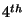
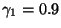
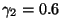
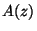
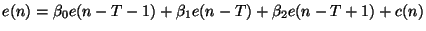
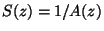
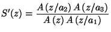
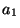
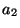

This section looks at how Speex works for narrowband (
 sampling rate) operation. The frame size for this mode is
,
corresponding to 160 samples. Each frame is also subdivided into 4
sub-frames of 40 samples each.
sampling rate) operation. The frame size for this mode is
,
corresponding to 160 samples. Each frame is also subdivided into 4
sub-frames of 40 samples each.
Also many design decisions were based on the original goals and assumptions:
An LPC analysis is first performed on a (Hamming) window that spans all the current frame and half a frame in advance. The LPC coefficients are then converted to Line Spectral Pair (LSP), a representation that is more robust to quantization. The LSP's are considered to be associated to the

sub-frames and the LSP's associated to the first 3 sub-frames are linearly interpolated using the current and previous LSP's.The LSP's are encoded using 30 bits for higher quality modes and 18 bits for lower quality, through the use of a multi-stage split-vector quantizer. For the lower quality modes, the 10 coefficients are first quantized with 6 bits and the error is then divided in two 5-coefficient sub-vectors. Each of them is quantized with 6 bits, for a total of 18 bits. For the higher quality modes, the remaining error on both sub-vectors is turther quantized with 6 bits each, for a total of 30 bits.
The perceptual weighting filter  used by Speex is derived from
the LPC analysis and corresponds to the one described by eq. 1
with
used by Speex is derived from
the LPC analysis and corresponds to the one described by eq. 1
with

and
. We can use the unquantized
filter since the weighting filter is only used in the encoder.
Speex uses a 3-tap prediction for pitch. That is,

where  is the pitch period and the
is the pitch period and the
 are the prediction
(filter) taps. The period and quantized gains are determined in closed
loop.
are the prediction
(filter) taps. The period and quantized gains are determined in closed
loop.
In Speex, the innovation signal is quantized using shape-only vector quantization (VQ). That means that the codebooks that are used represent both the shape and the gain at the same time. This save many bits that would otherwise be allocated for a separate gain at the price of a slight increase in complexity. Except for the absence of (backward-adaptive) gain, the technique used in Speex is similar to G.728 (LD-CELP). However since we do not have a low-delay constraint, the search can be made more ``global'' and make use of the whole information available for a sub-frame.
There are 7 different narrowband bit-rates defined for Speex, ranging from 200 bps to 18.15 kbps, although the modes below 5.9 kbps should not be used for speech. The bit-allocation for each mode is detailed in table 1. Each frame starts with the mode ID encoded with 4 bits which allows a range from 0 to 15, though only the first 7 values are used (the others are reserved). The parameters are listed in the table in the order they are packed in the bit-stream. All frame-based parameters are packed before sub-frame parameters. The parameters for a certain sub-frame are all packed before the following sub-frame is packed. Note that the ``OL'' in the parameter description means the the parameter is an open loop estimation based on the whole frame.
|
So far, no MOS (mean opinion score) subjective evaluation has been performed for Speex. In order to give an idea of the quality achivable with it, table 2 presents my own subjective opinion on it. It sould be noted that different people will perceive the quality differently and that the person that designed the codec often has a bias (one way or another) when it comes to subjective evaluation. Last thing, it should be noted that for most codecs (including Speex) encoding quality sometimes varies depending on the input.
|
This part of the codec only applies to the decoder and can even be changed without affecting inter-operability. For that reason, the implementation provided and described here should only be considered as a reference implementation. The enhancement system is devided in two parts. First, the synthesis filter

is replaced by an enhanced filter

and
depend on the mode in use and